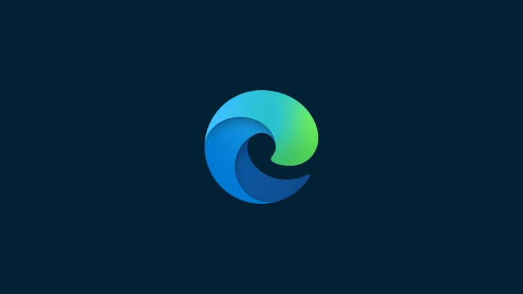

HOME
ABOUT US
COMMUNICATE
Browser industry changed a lot, especially about security in this age. We want to make it easier to you find the most suitable browser.
You can go to download pages of browsers by clicking their titles.
↓
Don't forget the best browser is your requirement.
Chrome is the most popular browser ever. If you work with Google services a lot you should use Chrome with perfect Google integration.
There
are some problems too. For example the most risky browser is Chrome because of the usage percentage and there isn't any
ad or tracker
blocker in Google Chrome. I want add that Chrome has the biggest extension store but if another
browser which you use based on Chromium you can use it too.

Firefox is the second most popular browser and includes high security with tracker blocking. Mozilla Foundation doesn't collect data as much as Google (nearly nothing). You can customize your browser easily with Mozilla Extension Store, it isn't as good as Chrome's but you can use in peace of mind. You should absolutely use extensions with this browser. Safe and fast browser.

Brave became popular nowadays with it's security features, especially blocking all Opera is popular with it's social media platform integrations. You can use
trackers and ads without downloading extra extensions. Also Brave based on Instagram, Whatsapp, Discord, Messenger, Twitch etc. only in one app.
Chromium like Google Chrome. You can download extensions from the biggest Especially social media phenomena use this browser a lot.
browser extension library
without using Google Chrome easily. It has own proxy too (named as Opera VPN but actually it is for marketing).
Brave has a unique feature, you can connect to Tor browser easily without using
any extra tools.
Microsoft Edge Chromium is a new browser after HTML Edge disaster. Nearly same with Google Chrome. Differences are: integration with Microsoft services (Office 365 and Bing), own buried ad and tracker blocker (doesn't works as well as Brave's).
| Chrome | Firefox | Brave | Opera | Edge (Chromium) |
|---|---|---|---|---|
| None | Blocks Trackers | Block Trackers | Block Trackers (low level) | Block Trackers (low level) |
| None | None | Adblock | Adblock (low level) | Adblock (low level) |
| None | Open Source | Open Source | None | None |
| None | None | Tor Browser | Proxy | None |
Note: Speed test results (They can change with some environmental changes.)
©Browsearch 2023